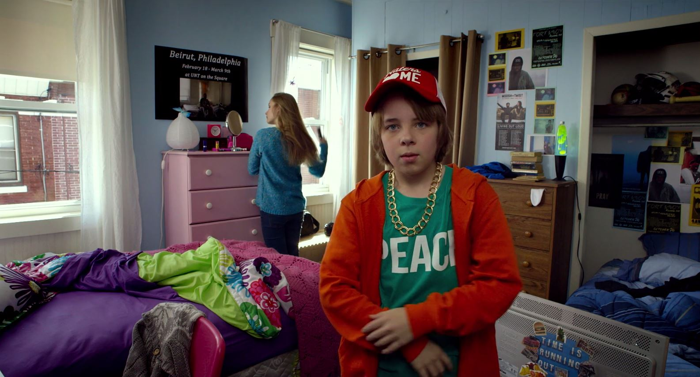
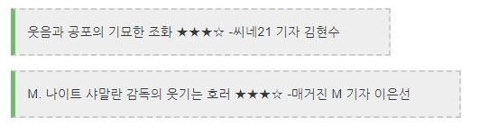

영화 소개

더 비지트 The Visit, 2015
-스릴러, 공포
-미국
-94분
-15세 관람가
-감독: M. 나이트 샤말란
여느 때와 같이 넷플릭스를 샅샅이 뒤지던 중 내 눈에 <더 비지트>라는 공포영화가 들어왔다. 평소 무서운 영화를 좋아하는 나였지만 넷플릭스에 있는 공포영화들은 딱히 재미있지 않다는 걸 알았기 때문에 별다른 기대는 하지않고 영화를 재생했다.
-스릴러, 공포
-미국
-94분
-15세 관람가
-감독: M. 나이트 샤말란

베카와 타일러는 오래전부터 부모님과 연을 끊고 살던 엄마를 대신해 예전부터 궁금해하던 할아버지&할머니를 만나러 간다. 그리고 그곳에 일주일 동안 머무르며 영상을 촬영해 다큐멘터리로 제작하기로 한다.

할아버지&할머니는 처음 본 손주들을 따뜻하게 대해준다. 하지만 이른 취침시간 때문에 깨어있던 베카는 어두운 집안을 돌아다니는 할머니를 목격한다. 또 타일러가 헛간에 자꾸 무언가를 숨기는 할아버지를 보게 되면서 아이들은 수상함을 느낀다.

할아버지와 할머니는 자신들의 행동이 나이가 많은 탓이라며 이해시키려 하고, 엄마마저도 원래 유별난 분들이셨다며 아이들을 타이른다. 아이들은 이해하려고 하지만 벽을 보고 웃는 할머니와 입에 총을 대고 있는 할아버지 등 갈수록 심해지는 그들의 이상행동에 두려워진다.

아이들은 겁에 질린 채로 집에 돌아갈 시간만을 손꼽아 기다린다. 하지만 할아버지&할머니의 의심을 사지 않으려 자연스럽게 행동한다.

아이들은 할아버지&할머니가 집 밖에 나간 틈을 타 엄마에게 영상통화를 걸어 당장 자신들을 데리러 오라고 말한다. 당황한 엄마에게 창밖에 있는 그들의 모습을 보여주자 엄마는 충격적인 말을 뱉는다. “저들은 할머니, 할아버지가 아니야.”
뒷 내용은 영화로 확인하세요~~~!!

-“오븐 안에 들어가서 청소 좀 해주겠니?”
-영화 속 할머니는 치매의 일종인 '선다우닝'환자로, 쉽게 말해 낮에는 정상적이지만, 어두워지기 시작하는 9시 반 이후부터는 뇌에 들어오는 빛의 양이 적어져 발작을 일으키게 되는 조건부 치매를 앓고있다.
-본인이 지은 ‘T 다이아몬드 스타일러스’라는 예명도 가지고 있다.
-공포 영화치고 웃음 포인트가 꽤 많은 것 같기는 하다,,,
처음에 기대를 전혀 하지않고 시청했는데 내용전개도 자연스러웠고 전반적인 분위기도 좋았다. 무엇보다 다큐멘터리 촬영기법을 사용해 1인칭 시점에서 촬영했다는 점이 신선했고, 영화 후반부에 엄청난 반전이 있어서 더 몰입해 볼 수 있었다. 공포영화치고는 무겁지 않은 느낌이라 가볍게 킬링타임용으로 봐도 좋을 것 같다. 다음에 다시 한 번 볼 의향도 있다!